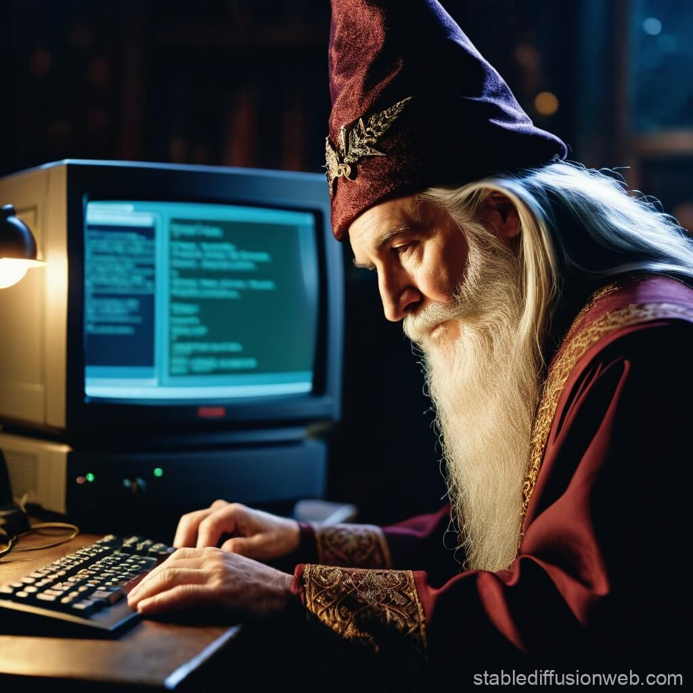

Welcome to my website!
My name is Patrick. I'm on a computer all the time.I grew up with the internet and games like Warcraft 2, Unreal Tournament and Heroes of Might and Magic 3.
I can still remember the dial-up connection noises, as well as my mom or dad wanting to use the phone and getting an earful of computer noise.
I've always enjoyed learning how computers work and I am used to being the one to help my mom with basic computer tasks like transferring files ("You know how to drag and drop...") or how to get a picture printed off, etc. so between my brother and I, we were the computer wizards.

A totally real photo of me in the 90's!
A totally real photo of me in the 90's!